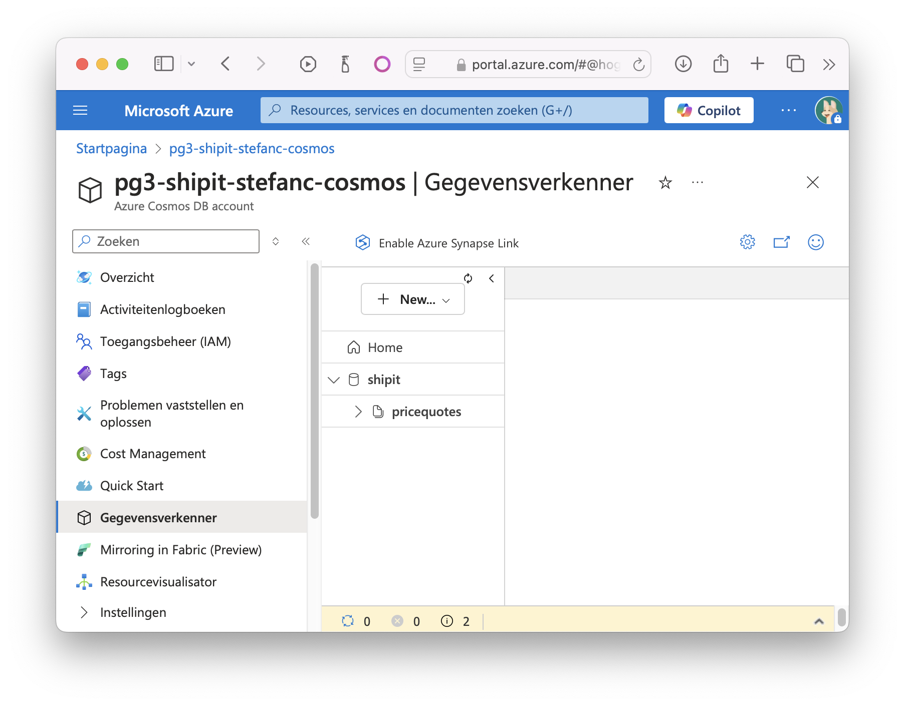
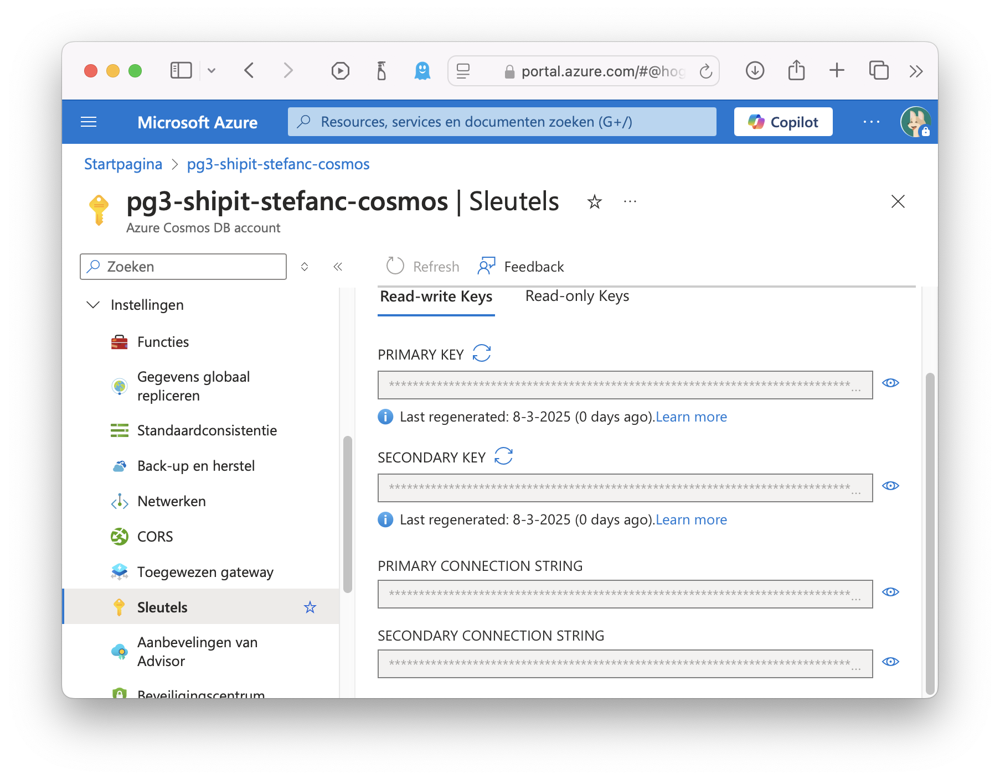
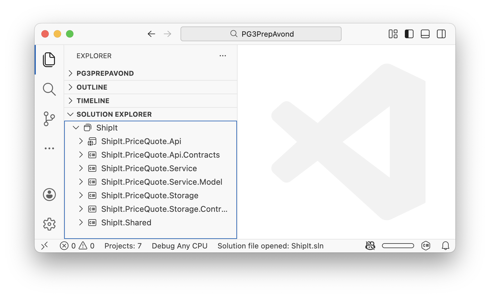

Cosmos Database
Doel van deze les
-
Azure Cosmos DB leren kennen.
-
Options Pattern gebruiken.
-
Niet schrikken van verticaal Async implementatie.
Story - Quotes Opslaan
Cosmos Database Aanmaken
Maak een nieuwe Cosmos DB for NoSQL aan via de Azure Portal.
Kies Cosmos DB for NoSQL.
Kies een logische naam. Maak je resource in Europa indien beschikbaar. Aligneer andere settings met onderstaand voorbeeld.
Maak een database shipit en een container pricequotes. Gebruik /id als partition key.
| Er valt meer te vertellen over PartitionKeys. Dat leer je wel op het werk in de mate van het nodige. We beperken ons hier tot een implementatie die gewoon werkt, zonder stil te staan bij de exacte details en implicaties van de partition key keuze. |

We kunnen de connectionstring vinden onder de Keys sectie van de resource in Azure.

Solution
We maken gebruik van deze kans om de structuur van de solution verder uit te diepen.
-
Api
-
Api.Contracts (Immutable Record Types)
-
-
Services
-
Uitsplitsen naar eigen layer.
-
Services.Models → Mutable Class Types
-
Mapping: Api.Contracts ←→ Services.Models ←→ Storage.Contracts
-
-
Storage
-
Layer toevoegen
-
Storage.Contracts (Immutable Record Types)
-
-
Shared
-
Project toevoegen (voor Enum).
-

| Op dit moment zou je zeker kunnen stellen dat de oplossing overengineered is. Deze nieuwe solution structuur houdt steek als je weet dat het project nog sterk zal groeien. |
Storage Layer
Voeg nuget package Microsoft.Azure.Cosmos en Newtonsoft.Json toe aan dit nieuwe project.
We hebben een Repository interface en een Contract (DAO/DTO) nodig.
public record PriceQuoteStorageContract( (1)
string id, // cosmos key (2)
int width,
int height,
int depth,
double weight,
CountryEnum from,
CountryEnum to,
double price,
DateTime validUntil
);| 1 | Immutable record (reference type) is de logische keuze voor een datastructuur die enkel dient om informatie over te dragen. |
| 2 | Cosmos verwacht een lowercase id. |
De CosmosClient gebruikt Async operaties. Dit wil zeggen dat we het async-await-task paradigma in onze code moeten verwerken.
public interface IPriceQuoteRepository
{
Task<PriceQuoteStorageContract> CreateAsync(PriceQuoteStorageContract storageContract);
Task<PriceQuoteStorageContract?> GetAsync(string id);
}De implementatie van het Repository steunt volledig op de CosmosClient.
public class PriceQuoteRepository : IPriceQuoteRepository
{
public async Task<PriceQuoteStorageContract> CreateAsync(
PriceQuoteStorageContract storageContract)
{
var itemResponse = await GetCosmosContainer()
.CreateItemAsync(
item: storageContract,
partitionKey: new PartitionKey(storageContract.id)
);
return itemResponse.Resource;
}
public async Task<PriceQuoteStorageContract?> GetAsync(
string id)
{
var itemResponse = await GetCosmosContainer()
.ReadItemAsync<PriceQuoteStorageContract>(
id: id,
partitionKey: new PartitionKey(id)
);
return itemResponse.Resource;
}
private static Container GetCosmosContainer() (1)
{
var client = new CosmosClient("<connectionstring>");
var database = client.GetDatabase("shipit");
var container = database.GetContainer("pricequotes");
if (container is null)
{
throw new Exception("Could not obtain cosmos container.");
}
return container;
}
}| 1 | De logica om de Container vast te krijgen, is dezelfde voor Read en Write operaties, dus we encapsuleren dit in een methode. |
Service Layer
De service ondergaat refactoring om niet alleen de prijs te berekenen, maar ook een PriceQuote op te slaan en later op te vragen.
public interface IPriceQuoteService
{
Task<PriceQuoteResponseContract> CreatePriceQuoteAsync(
PriceQuoteRequestContract priceQuoteRequestContract); (1)
Task<PriceQuoteResponseContract?> GetPriceQuoteAsync(
string id); (2)
}| 1 | De bestaande create methode wordt async en krijgt een nieuwe naam. |
| 2 | Er wordt een read methode voorzien. |
De concrete implementatie van de interface zal de business logica en de mapping tussen data model en api contract verzorgen.
public class PriceQuoteService(IPriceQuoteRepository priceQuoteRepository)
: IPriceQuoteService
{
public async Task<PriceQuoteResponseContract> CreatePriceQuoteAsync(
PriceQuoteRequestContract priceQuoteRequestContract)
{
// Map to model
var quoteModel = priceQuoteRequestContract.AsModel();
// Execute business logic
if(quoteModel is { CountryFrom: CountryEnum.NL, WeightKg: > 10 })
throw new Exception("Package from NL exceeds max weight of 10kg.");
quoteModel.Price = CalculatePrice(quoteModel);
quoteModel.ValidUntil = DateTime.Now.AddHours(48);
// Store data
var quoteRecord = quoteModel.AsRecord();
var createdQuoteRecord = await priceQuoteRepository
.CreateAsync(quoteRecord);
quoteModel = createdQuoteRecord.AsModel();
// Map to contract and return
return quoteModel.AsResponseContract();
}
public async Task<PriceQuoteResponseContract?> GetPriceQuoteAsync(
string id)
{
var quoteRecord = await priceQuoteRepository.GetAsync(id);
return quoteRecord?.AsModel().AsResponseContract();
}
private double CalculatePrice(PriceQuoteModel model)
{
// ...
}
}De mapping gebeurt in een aparte klasse in de service layer, die we bijvoorbeeld PriceQuoteMappingExtensions noemen. Deze bevat de nodige extension methods.
Api Layer
Om te kunnen voldoen aan de CreatedAt requirement, breiden we het PriceQuoteResponseContract uit. Ook dit wordt een immutable reference type.
public record PriceQuoteResponseContract(
string Id,
int WidthCm,
int HeightCm,
int DepthCm,
double WeightKg,
CountryEnum CountryFrom,
CountryEnum CountryTo,
double Price,
DateTime ValidUntil
);De Controller heeft een nieuwe methode nodig om de Get operatie te ondersteunen.
[Route("api/pricequotes")]
[ApiController]
public class PriceQuoteController(IPriceQuoteService priceQuoteService): ControllerBase
{
[HttpPost]
public async Task<ActionResult<PriceQuoteResponseContract>> CreatePriceQuoteAsync(
[FromBody]PriceQuoteRequestContract priceQuoteRequestContract)
{
var created = await priceQuoteService.CreatePriceQuoteAsync(priceQuoteRequestContract);
return CreatedAtAction(nameof(GetPriceQuote), new { id = created.Id}, created); (1)
}
[HttpGet("{id}")]
public async Task<ActionResult<PriceQuoteResponseContract>> GetPriceQuoteAsync(
[FromRoute] string id)
{
var result = await priceQuoteService.GetPriceQuoteAsync(id);
if (result is null)
return NotFound();
return Ok(result);
}
}| 1 | De bestaande POST operatie wordt aangepast om een CreatedAtAction result te gebruiken. |
Om de nameof(GetPriceQuoteAsync) te kunnen resolven in de context van een CreatedAtAction, moeten we .Net vertellen de Async suffix van methode namen wel in rekening te brengen.
//...
builder.Services.AddControllers()
.AddJsonOptions(opt => {
opt.JsonSerializerOptions.Converters.Add(
new JsonStringEnumConverter());
})
.AddMvcOptions(options => {
options.SuppressAsyncSuffixInActionNames = false; (1)
});
//...| 1 | Nieuwe configuratie om …Async suffix van methode namen in rekening te brengen. |
| Het alternatief is de naam hardcoden, maar dat is minder elegant. |
Options Pattern
Een handige manier om settings niet te hardcoden is een strongly typed configuratie (klasse) te definiëren en data uit appsettings.(Development).json daar op te mappen. Zoals altijd kan je dit zelf implementeren, maar is het verstandiger een gepaste Nuget van Microsoft te gebruiken.
Definitie
Voeg toe aan Storage en Api projecten: Microsoft.Extensions.Options
Definieer de settings.
{
...
"AllowedHosts": "*",
"PriceQuoteRepositoryOptions": {
"Connectionstring" : "",
"DatabaseName" : "shipit",
"ContainerName" : "pricequotes"
}
}appsettings.json wordt opgenomen in het git repo. De file mag geen gevoelige settings bevatten.Gevoelige settings bewaar je eventueel wel in appsettings.Development.json. Deze file hoort niet thuis in Git.
| Gevoelige settings worden idealiter als secrets behandeld. |
De waarden in appsettings.Development.json overriden appsettings.json bij lokaal uitvoeren van de code (in Development mode).
{
...
"AllowedHosts": "*",
"PriceQuoteRepositoryOptions": {
"Connectionstring" : "het grote geheim",
"DatabaseName" : "pricequotes",
"ContainerName" : "pricequotes"
}
}Definieer een klasse voor de Repository settings.
public class PriceQuoteRepositoryOptions
{
public string Connectionstring { get; set; }
public string DatabaseName { get; set; }
public string ContainerName { get; set; }
}Gebruik
Voeg deze toe aan de constructor van het repo en spreek het object aan in de code.
using Microsoft.Azure.Cosmos;
using Microsoft.Extensions.Options;
using ShipIt.PriceQuote.Storage.Records;
namespace ShipIt.PriceQuote.Storage;
public class PriceQuoteRepository(IOptions<PriceQuoteRepositoryOptions> options) : IPriceQuoteRepository
{
// ...
private Container GetCosmosContainer()
{
var client = new CosmosClient(options.Value.Connectionstring); (1)
var database = client.GetDatabase(options.Value.DatabaseName); (1)
var container = database.GetContainer(options.Value.ContainerName); (1)
if (container is null)
{
throw new Exception("Could not obtain cosmos container.");
}
return container;
}
}| 1 | Hier worden de options gebruikt. |
Dependency Injection
Nu moeten we enkel nog het systeem vertellen de juiste sectie te mappen en klaar te houden voor injectie.
//...
builder.Services.Configure<PriceQuoteRepositoryOptions>(
builder.Configuration.GetSection(
nameof(PriceQuoteRepositoryOptions) (1)
)
);
builder.Services.AddScoped<IPriceQuoteRepository, PriceQuoteRepository>(); (2)
//...| 1 | Aanduiden welke sectie uit settings file te mappen op welke klasse. Het gebruik van nameof in deze context is La Beauté du geste - je kan natuurlijk eender welke key mappen. |
| 2 | Vergeet de IPriceQuoteRepository niet te vermelden zodat deze in de PriceQuoteService geresolved kan worden. |
Deployment
az webapp up `
--name hogent-pg3-stefancourteaux-shipit-quote ` (1)
--plan hogent-pg3-stefancourteaux-shipit-plan `
--resource-group hogent-pg3-stefancourteaux-shipit `
--location westeurope `
--os-type linux| 1 | Backtick ` is het escape character in powershell. Backslash \ is equivalent in Linux, macOS en vele programmeertalen. |
Oefening
Probeer zelf de taak van de week te implementeren. Je kan steeds kijken naar de code uit de les als je vast loopt.